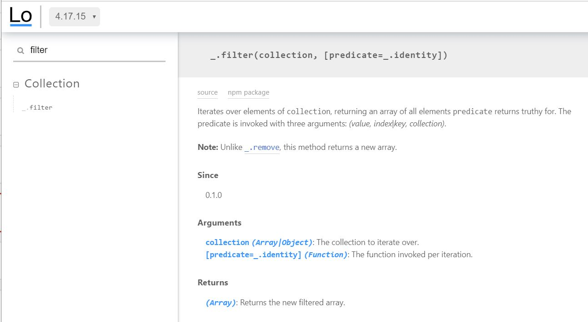

Contents
- What is LoDash.
- The relevance of LoDash after the introduction of ES6.
- What are the benefits of using Lodash.
- How to use.
- Examples of using.
- Conclusion.
What is LoDash.
Lodash is a JavaScript library
which provides utility functions for common programming tasks
Why Use Lodash When ES6 Is Available
Lodash will remain popular, for it still has lots of useful features
that could improve the way of programming.
Most native equivalents are array methods, and will not work with objects.
Why Lodash?
Lodash makes JavaScript easier
by taking the hassle out of working with arrays,numbers, objects, strings,etc.
High-speed cross-browser library
Possibility to import for usage the required function (module) only,
but not the complete library.
Lodash heavily concentrated on performance.
Documentation is nice and concise

Easy to start
Installation
In a browser:
Using npm:
$ npm i -g
$ npm i --save lodash
Examples
- Lodash can be broken down into several main areas:
- Utilities
- Function
- String
- Array
- Collection
- Object
- Sequence
Examples. Utilities
Performs a deep comparison between two values to determine if they are equivalent.
_.isEqual(value, other)Checks if value is null.
_.isNull(value)Converts value to an array.
_.toArray({ 'a': 1, 'b': 2 }); // => [1, 2]Examples. Function
_.partial(func, [partials])
Creates a function that invokes func with partials prepended to the arguments it receives.
function divide(a, b) {
return a / b;
}
var half = _.partial(divide, _, 2);
var invert = _.partial(divide, 1);
Examples. String
_.snakeCase([string=''])
Converts string to snake case.
_.snakeCase('Foo Bar');
// => 'foo_bar'
_.snakeCase('fooBar');
// => 'foo_bar'
_.snakeCase('--FOO-BAR--');
// => 'foo_bar'Examples. Array
_.chunk(array, [size=1])
Creates an array of elements split into groups the length of size. If array can't be split evenly, the final chunk will be the remaining elements.
_.chunk(['a', 'b', 'c', 'd'], 2);
// => [['a', 'b'], ['c', 'd']]_.chunk(['a', 'b', 'c', 'd'], 3);
// => [['a', 'b', 'c'], ['d']]_.compact(array)
Creates an array with all falsey values removed. The values false, null, 0, "", undefined, and NaN are falsey.
_.compact([0, 1, false, 2, '', 3]);
// => [1, 2, 3]Examples. Collection
_.filter(collection, [predicate=_.identity])
Iterates over elements of collection, returning an array of all elements predicate returns truthy for.
var users = [
{ 'user': 'barney', 'age': 36, 'active': true },
{ 'user': 'fred', 'age': 40, 'active': false }];
// The `_.matches` iteratee shorthand.
_.filter(users, { 'age': 36, 'active': true });
// => objects for ['barney']
// The `_.matchesProperty` iteratee shorthand.
_.filter(users, ['active', false]);
// => objects for ['fred']
// The `_.property` iteratee shorthand.
_.filter(users, 'active');
// => objects for ['barney']
Examples. Object
_.omit(object, [paths])
this method creates an object composed of the own and inherited enumerable property paths of object that are not omitted.
var object = { 'a': 1, 'b': '2', 'c': 3 };
_.omit(object, ['a', 'c']);
// => { 'b': '2' }Conclusion
- Lodash is still a great library with many useful features.
- Lodash adds great power to JavaScript language.
- One can write concise and efficient codes.
- Lodash is fully modularized.
- Most native array methods will not work with objects, so Lodash in this case is the better option.